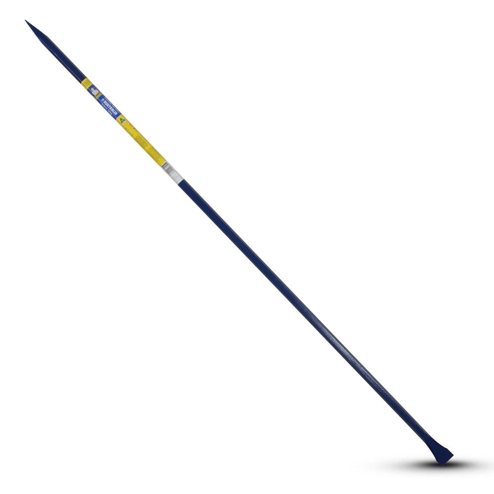
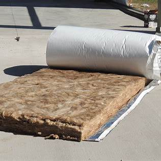

Manual and Mechanical Handling of Carpentry Materials
Unit: CPCCCA2011 - Handle carpentry materials
Hazardous manual tasks are a leading cause of musculoskeletal injury. Under WHS laws the person conducting a business or undertaking (PCBU) must identify manual handling hazards, consult with workers and eliminate or minimise risks using the hierarchy of controls. Risk factors include forceful exertions, awkward postures, vibration and repetitive movements. Workers have a duty to take reasonable care and follow safe work procedures. The tips below are informed by these requirements.
Safe Manual Handling Techniques
- Plan your lift and clear your path - Know where the load is going and remove obstacles before lifting.
- Break down heavy loads or use mechanical aids - Use trolleys, pallet jacks, hoists or forklifts rather than lifting manually where possible.
- Bend your knees and lift with your legs, not your back - Keep your spine straight and head up; let your leg muscles do the work.
- Hold the load close to your body - This reduces strain and improves control.
- Avoid twisting your body - Turn your whole body by moving your feet rather than twisting your back.
- Team lift for bulky, heavy or awkward loads - Communicate and coordinate your movements with your partner.
- Use mechanical aids whenever appropriate - such as trolleys, pallet jacks, hoists or cranes to eliminate or reduce manual lifting.
- Take regular breaks from repetitive tasks - To reduce fatigue and the risk of musculoskeletal disorders.
Material Handling Equipment
Proper material handling equipment is essential for safe and efficient construction work:
Mechanical Aids
|
Forklift |

|

|
Pallet Trolley |
|
Wheelbarrow |

|
Site Work Tools

|
Shovel |
|
Crowbar |
 |
Specialized Materials
|  |
Insulation |
|
Scaffolding |

|
Storage and Stacking Guidelines
- Stack materials on level ground - Ensure stable foundations to prevent collapse
- Use proper stacking heights - Follow manufacturer guidelines and site safety rules
- Separate different materials - Prevent contamination and make identification easier
- Protect from weather - Cover materials to prevent damage from rain, sun, or wind
- Maintain clear access paths - Ensure emergency access and material retrieval routes
- Use appropriate lifting points - Follow marked lifting points on materials and equipment
Manual Handling Risk Assessment
Before handling any materials, assess the risks by considering:
- Weight and size of load - Can it be safely lifted by one person?
- Shape and grip - Are there adequate handholds?
- Distance to move - How far does the load need to travel?
- Height of lift - Lifting above shoulder height increases risk
- Frequency of task - Repetitive lifting increases injury risk
- Environmental factors - Consider lighting, floor surfaces, and obstacles
Team Lifting Procedures
When team lifting is required:
- Choose team members of similar height - Ensures even load distribution
- Designate a leader - One person calls the commands
- Plan the route together - Discuss path, rest points, and destination
- Use clear communication - Establish signals for lift, move, and lower
- Lift and lower together - Coordinate movements to prevent injury
- Take breaks as needed - Don't rush the process
Key Safety Reminders
- Never lift alone if unsure - Ask for help or use mechanical aids
- Warm up before heavy lifting - Stretch muscles and joints
- Report injuries immediately - Even minor strains should be documented
- Use proper lifting technique - Legs do the work, not your back
- Maintain good posture - Keep spine aligned throughout the lift
- Know your limits - Don't attempt lifts beyond your capability